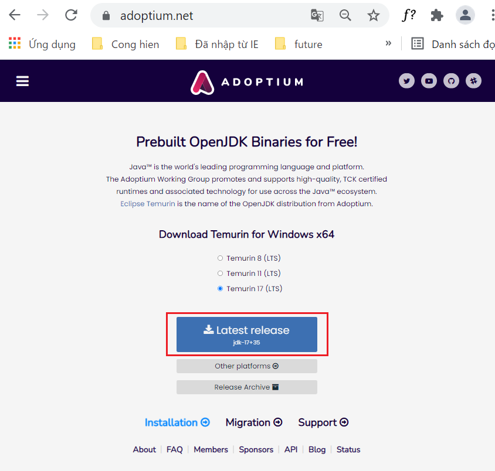
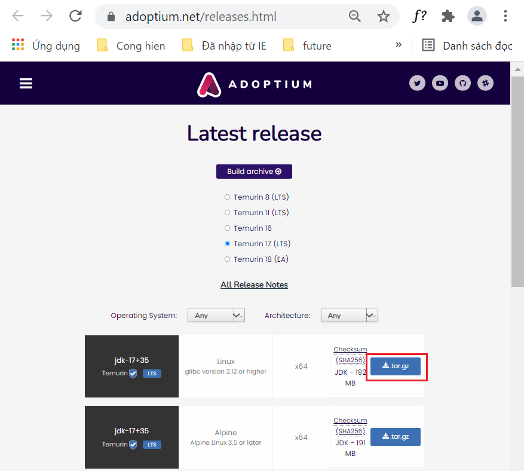
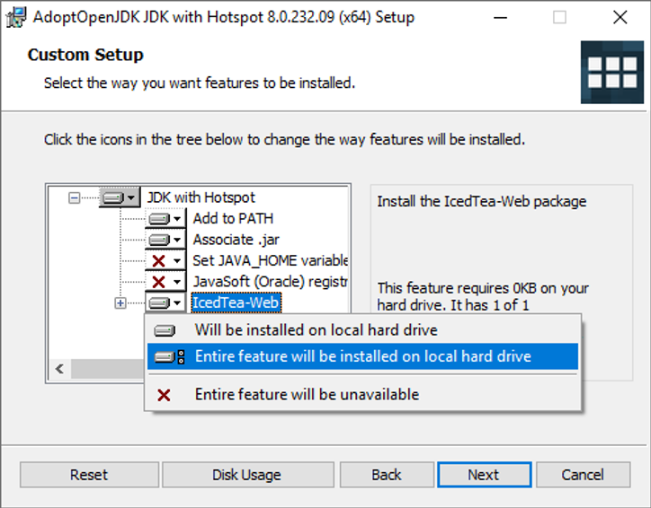
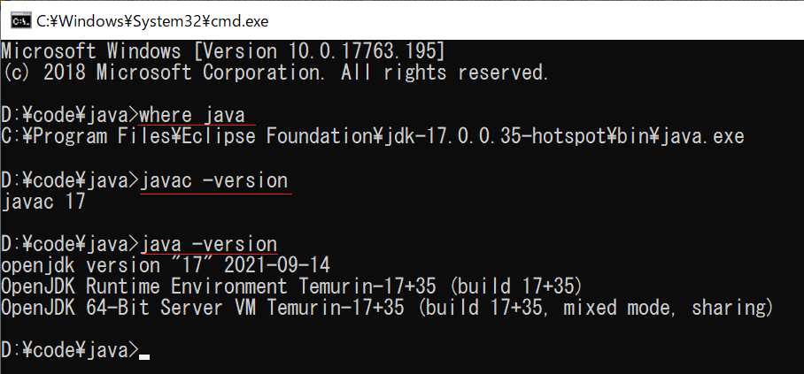
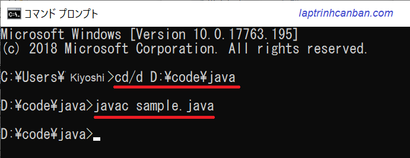
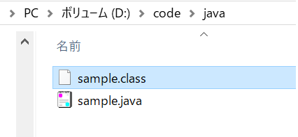
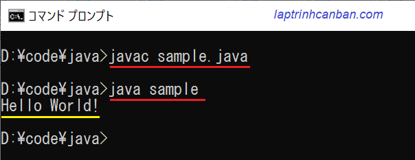

Hướng dẫn cách cài đặt Java bằng AdoptOpenJDK. Bạn sẽ học được cách tải về và cài đặt AdoptOpenJDK để sử dụng Java miễn phí sau bài học này.
AdoptOpenJDK là gì
AdoptOpenJDK là tệp nhị phân của OpenJDK được cung cấp bởi cộng đồng. Giống như OpenJDK thì chũng ta có thể sử dụng AdoptOpenJDK để cài đặt và sử dụng miễn phí Java, ngay cả với mục đích thương mại.
Lý do OpenJDK cũng như một số các tệp nhị phân của OpenJDK như AdoptOpenJDK được cộng đồng phát triển, là do từ tháng 4 năm 2019 thì phiên bản chính thức Oracle JDK đã không còn miễn phí khi sử dụng với mục đích thương mại nữa. Và để tiếp tục sử dụng Java thì cộng đồng cũng như nhiều cá nhân khác nhau đã phát triển các tệp nhị phân cũng cấp JDK từ phiên bản miễn phí OpenJDK.
Khác với bản gốc OpenJDK do công ty Oracle cung cấp thì AdoptOpenJDK lại được cộng đồng cùng phát triển. Một số công ty trong cộng đồng cùng phát triển có thể kể đến như Azul, Amazon, GoDaddy, IBM, jClarity, Red Hat hay Microsoft chẳng hạn.
Thời hạn hỗ trợ của AdoptOpenJDK
Giống với bản JDK có phí Oracle JDK do Oracle phát hành thì thời hạn hỗ trợ của AdoptOpenJDK cũng là 3 năm đối với bản LTS(Long Term Support). Do vậy đây cũng là lựa chọn lý tưởng cho các doanh nghiệp khi muốn dùng Java miễn phí với mục đích thương mại.
Ngoài phiên bản LTS thì AdoptOpenJDK cũng được phát hành với bản non-LTS với thời hạn hỗ trợ ngắn hơn là nửa năm. Hiện tại vào thời điểm Kiyoshi viết bài này (21/10/19) thì phiên bản mới nhất của AdoptOpenJDK với bản LTS là Java 17, được phát hành vào tháng 9 năm 2021, và thời hạn hỗ trợ sẽ đến khi phiên bản tiếp theo được phát hành.
Tải AdoptOpenJDK
Để cài AdoptOpenJDK, trước hết chúng ta cần tải file cài đặt về bằng cách truy cập trang web chính thức như sau:
Màn hình sau đây hiện ra. Hãy click vào [Latest release] để tải về file cài đặt.

Lại nữa, về cơ bản thì phiên bản phù hợp với hệ điều hành sẽ được hệ thống tự động lựa chọn cho bạn. Nếu trong trường hợp đó không phải là bản mà bạn muốn thì cũng có thể thay đổi phiên bản bằng cách click vào [Other platform], rồi click vào file [.tar.gz] tương ứng để tải phiên bản bạn cần.

Sau khi click thì file cài đặt OpenJDK17-jdk_x64_windows_hotspot_17_35.msi sẽ được tải về máy.
Cài đặt AdoptOpenJDK
Hãy click đúp chuột để mở file mới tải ở trên về và bắt đầu việc cài đặt Java bằng AdoptOpenJDK.
Về cơ bản thì chúng ta sẽ lựa chọn các thông số cài đặt mặc định như màn hình dưới đây:

Lưu ý là trong mặc định cài đặt thì AdoptOpenJDK sẽ tự động cài biến môi trường vào máy để chúng ta có thể sử dụng AdoptOpenJDK bằng cmd, thông qua lựa chọn [Add to PATH] ở trên. Và chúng ta cũng nên sử dụng lựa chọn này, để không phải mất công cài đặt biến môi trường cho AdoptOpenJDK sau này.
Sau đó, hãy liên tục click vào [Next] để có thể hoàn thành việc cài đặt AdoptOpenJDK vào hệ thống.
Kiểm tra phiên bản AdoptOpenJDK đã cài đặt
Sau khi đã cài đặt xong AdoptOpenJDK, hãy mở cmd, rồi nhập các dòng lệnh sau đây để kiểm tra phiên bản đã được tải về, cũng như là việc cài đặt Java bằng AdoptOpenJDK đã chính xác chưa.
Đầu tiên là lệnh kiểm tra vị trí cài đặt AdoptOpenJDK đã được khai báo trong biến môi trường.
where java |
Thông thường thì máy tính sẽ trả về vị trí mặc định cài đặt AdoptOpenJDK như sau:
C:\Program Files\Eclipse Foundation\jdk-17.0.0.35-hotspot\bin\java.exe |
Lệnh thứ 2 là kiểm tra version của trình biên dịch cũng như của Java.
javac -version |
Nếu thông tin của dưới đây hiện ra thì chúng ta đã hoàn thành việc cài đặt Java bằng AdoptOpenJDK rồi.

Biên dịch và chạy chương trình Java với AdoptOpenJDK
Sau khi đã cài AdoptOpenJDK với bản cài sẵn ở trên, tương tự như các JDK khác thì chúng ta sẽ dùng câu lệnh sau để tiến hành biên dịch chương trình Java với AdoptOpenJDK:
javac filename.java
Ví dụ cụ thể, chúng ta sẽ compile chương trình Helloworld đã được Kiyoshi giới thiệu trong bài Các viết và lưu chương trình trong Java với mã nguồn như sau:
class sample{ |
Hãy lưu lại file trên với tên sample.java tại một thư mục bất kỳ, ví dụ như là D:\code\java\sample.java chẳng hạn.
Để biên dịch (compile) file .java trên, trước hết chúng ta mở cmd trên máy tính, sau đó di chuyển đường dẫn trong cmd tới thư mục chứa file Java bằng lệnh sau:
cd/d D:\code\java |
Sau đó, hãy chạy lệnh sau đây để tiến hành compile file sample.java:
javac sample.java |

Sau khi compile thành công, một class file với tên sample.class sẽ được tạo ra trong cùng thư mục với file sample.java như dưới đây:

Và lúc này, hãy dùng lệnh sau đây để chạy class file vừa mới tạo ra
java sample |
Kết quả bạn có thể thấy chương trình chạy và in ra màn hình câu chào Hello world! như sau:

Tổng kết
Trên đây Kiyoshi đã hướng dẫn bạn về cách cài đặt Java bằng AdoptOpenJDK rồi. Để nắm rõ nội dung bài học hơn, bạn hãy thực hành viết lại các ví dụ của ngày hôm nay nhé.
Và hãy cùng tìm hiểu những kiến thức sâu hơn về Java trong các bài học tiếp theo.
HOME>> java cơ bản cho người mới bắt đầu>>02. cài đặt môi trường lập trình java